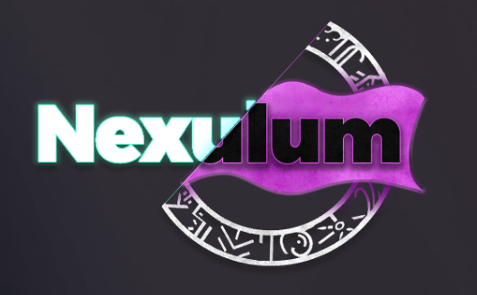

Award-winning capstone
Nexulum
Developed as a senior capstone and recognized as Best Overall Senior Project at UNR. The project emphasizes game-feel, progression systems, multiplayer-aware design, and the kind of scoped decision making required to turn an ambitious concept into a credible product.
- Class-based combat and progression architecture
- Rune crafting and ability systems
- Advanced enemy behavior systems and team-driven production